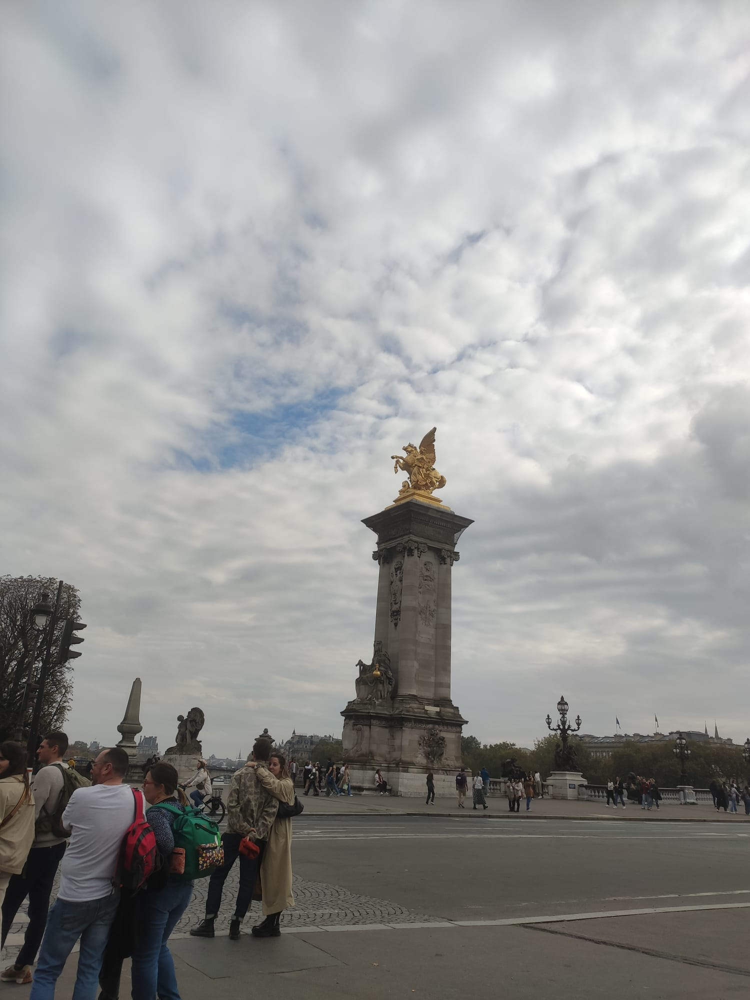
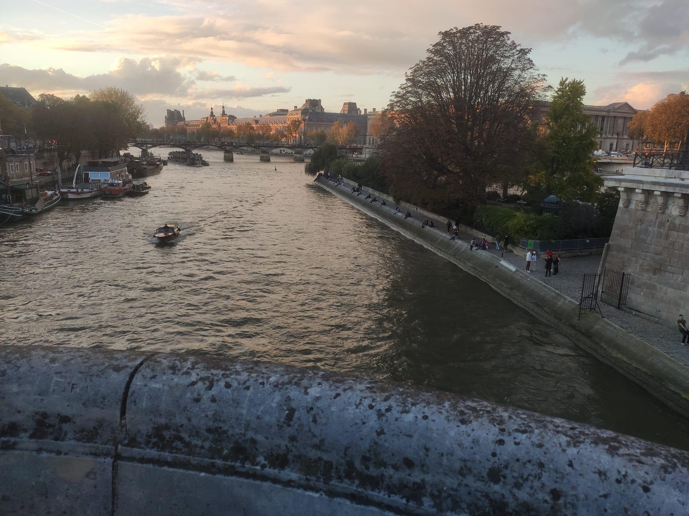
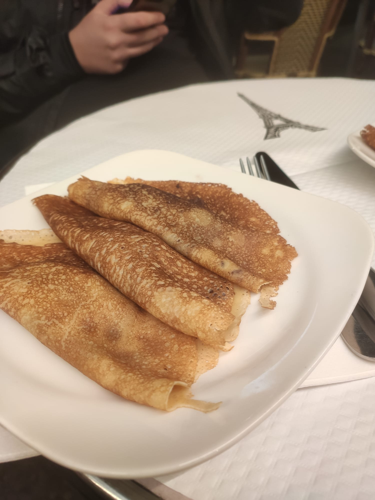

Unfortunately, Sunday was my last day in Paris... I was so sad, that it had to end so soon... But there still was a lot to do. Firstly, I went to a Café, and ate breakfast. It was actually good. I didn't like the coffee. My parents agreed to go again to the Eiffel Tower, and today it wasn't so cloudy so we could see it from far away, but now we got the chance to see it up close. When we arrived, and saw the Tower, I was shocked: the Tower was sooooo big! But i liked it more when it was lighten up :), but the best part was, that it wasn't very crowded.


After that, we went to buy some souvenirs, and then we went to the Louvre Museum. I didn't go inside,
but from the outside it was very beautiful, even is i couldn't get close enough to take a stunning picture of the Pyramid.
After visiting the Louvre Museum, we went to KFC, an ate the most delicious burger,
with the best french-fries. They were absolutely divine! I have never eaten such a delicious burger before!

After eating, we went to Avenue des Champs-Elysées, the most expensive shopping street in Paris. There I visited the Nike Store, and we passed the Louis Vuitton store, and we saw some very expensive clothes. Like, a purse would be 3,500 Euros, and that is a very good price for a purse for Louis Vuitton.

After eating, we went to visit a very big bridge (i forgot the name...). It was beautiful. I could see the river Seine, and all the tiny boats that were passing.
 We finished the day with 2 Crepes with banana and chocolate. Those were real Crepes. They were delicious, but very expensive... My mom got 3 Crepes and I also got 3 (that is a whole serving, 3 Crepes), and they were 13 Euros 2 servings of Crepes.
I loved Paris! I hope I will have the chance to visit it again!